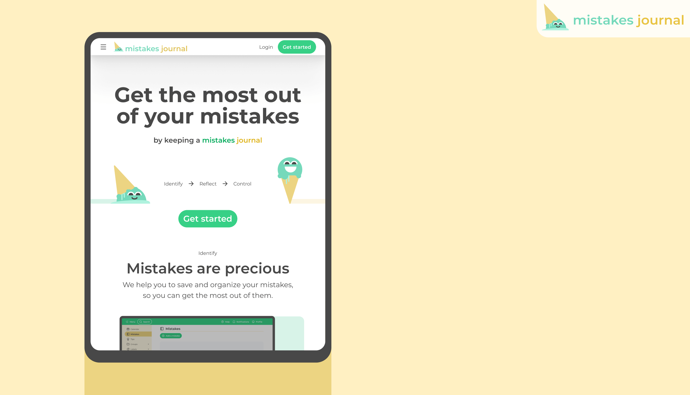
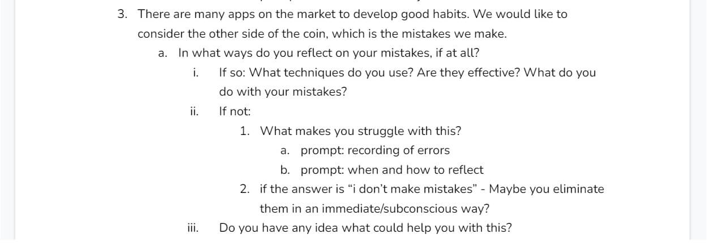
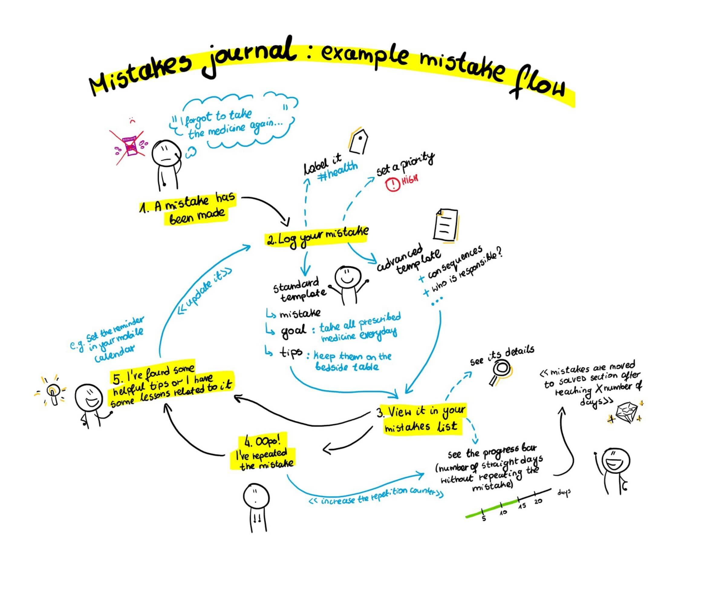
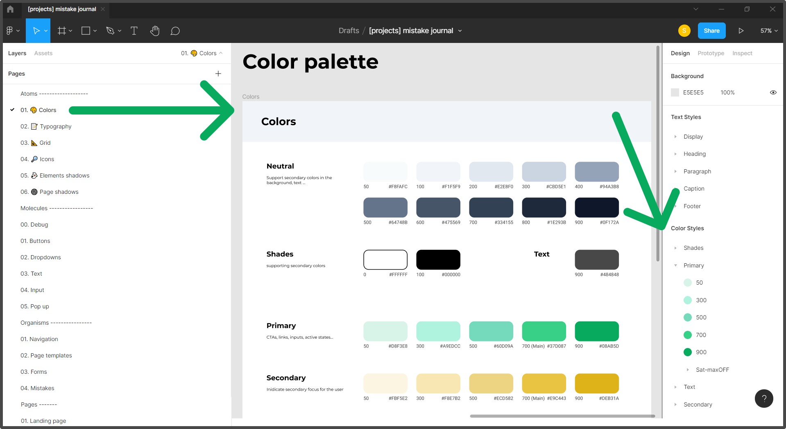
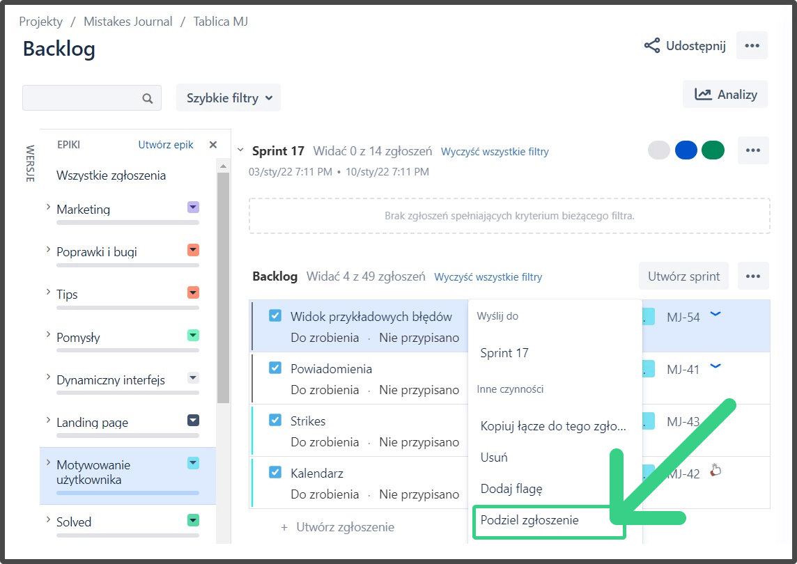
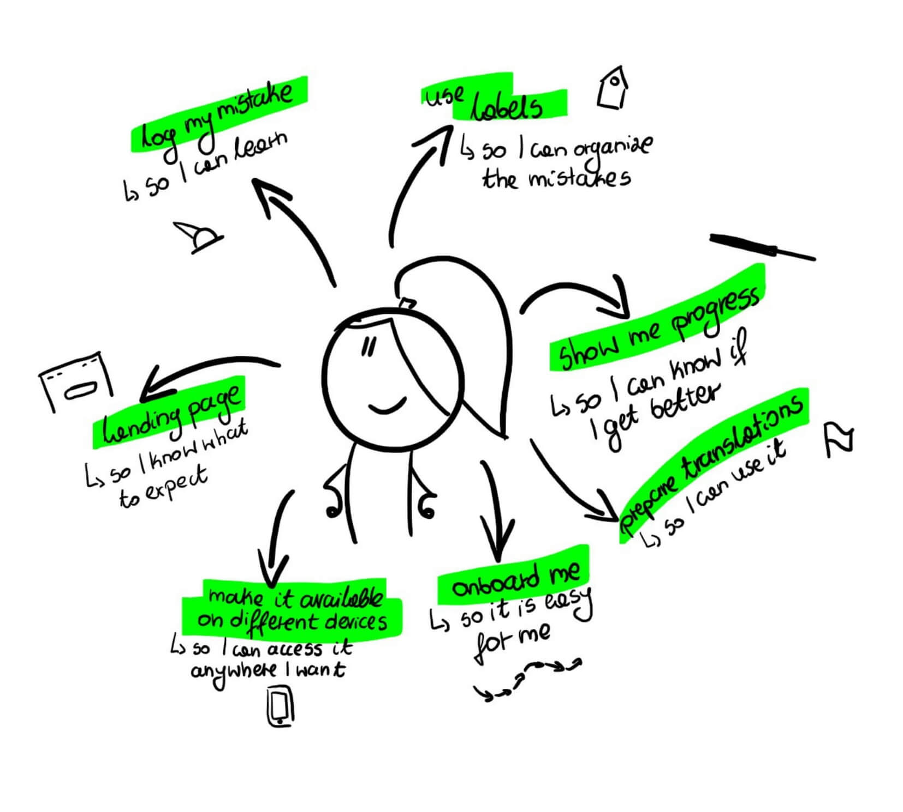
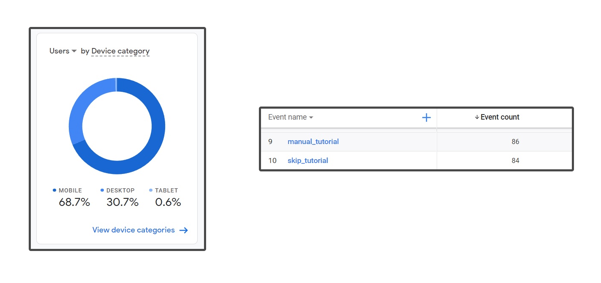
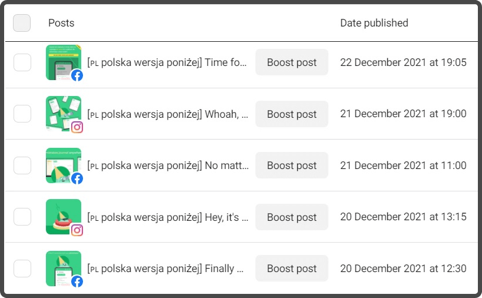
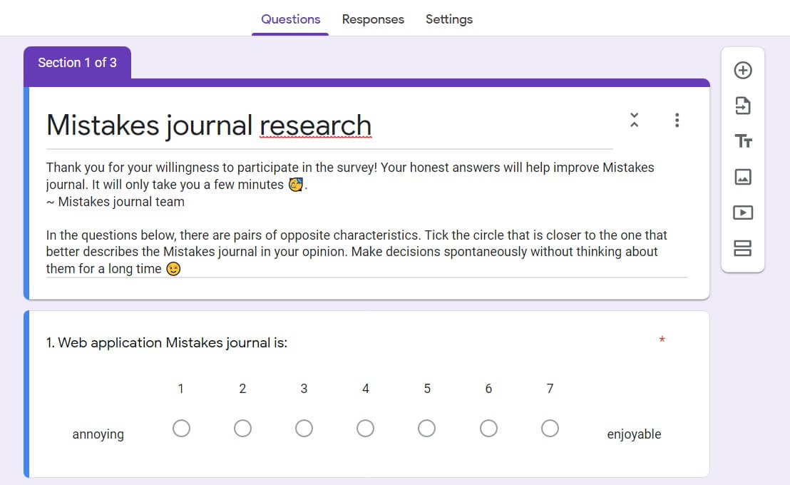

Intro
MISTAKES JOURNAL
Get the most out of your mistakes by keeping a mistakes journal
Introduction
Have you ever heard the phrase “learn from your mistakes”? Almost everyone has, but not many know how to introduce it to life. As a team, we wanted to help people organise their mistakes, so it becomes an easier process for them.
Summary
Project summary:
üè∑Ô∏è app name: Mistakes Journal
üéØ goal: app implementation:
- your personal, online journal for storing mistakes and lessons, so you can save lessons for future
üíª type: website app
üòé my role: UX designer, product owner/manager
üí™ team size: 4 people (me and 3 developers)
üìÖ when: II 2020 - now
⚙ project: university development project (part of a research project, which will be described in another case study)
✅ outcome (as of 18.01.2022): an early version of our app is publicly available: https://www.mistakesjournal.com/
Process outline
This case study covers :
Research
Ideation
Design
Iterative UX & dev
Testing
App launch
Project results
Research
Context
üéØ goal: Introduction
As I am a person who is interested in general self-development, I was getting more and more frustrated by sometimes repeating the same mistakes. I felt my lessons for the future were slipping through my fingers, getting lost somewhere, and thought others might have the same problem.
When we formed a 4 people team at the university and started looking for a problem to solve, after quick research, we decided to dive more into understanding the mistakes analysis process üßê.
Field study
üéØ goal: Identify the best approach to turn mistakes into lessons
⚙️ tools: Google Spreadsheet
I was looking for sources which tell, how to learn from my mistakes in the most efficient way. Below you can see the part of a field study sheet:
üí° Top highlights: The most important things to do when you want to learn from your mistakes are:
✅ keeping track of all your mistakes
✅ answering a series of questions related to the made mistake, which help you to reflect on it, like:
What are the consequences?
Am I the only responsible?
What could I do better next time?
✅ coming up with a plan, so to have a goal to achieve
üö® The problem:
- Even though “learn from your mistakes” is such a common phrase, usually, no one teaches us these techniques (which I discovered later). This is why we wanted to create a digital, effective template for everyday mistakes.
SWOT competitive analysis
üéØ goal: Check what other products support mistakes analysis and identify elements which we could improve and apply to our app
⚙️ tools: Google Spreadsheet, Figma
üî• Competition:
sticky notes/ paper and pen
a paper diary or journal
My Mistake Diary - What's fail in Today?
üñºÔ∏è Landscape (apps related to self-development, which present content similarly that we would do):
Todoist
TickTick
Below, you can find a summary of two SWOT analyses which I made:
My Mistake Diary - What's fail in Today?: My Mistake Diary - What's fail in Today? – Aplikacje w Google Play

Sticky notes (non-digital)
üí° Top highlights:
Even though there are some non-digital ways to handle your mistakes, it isn't convenient, and we could change it.
“My Mistake Diary - What's fail in Today?” is very basic and not polished: this is why I thought we had a chance for a place in the market.
Hypothesis
We formed the hypothesis:
There is no convenient and efficient tool which supports mistakes analysis and lessons storage.
Brainstorm: team as stakeholders
üéØ goal: Identify initial ideas which could later turn into requirements when designing the product backlog
⚙️ tools: Google Docs
Because all our team members considered themselves potential app users, we conducted a brainstorming session and noted any ideas that we could pursue in the Mistakes journal ü߆üå©Ô∏è.
üí° Top highlights:
üìù Different possibilities for mistakes description:
Differentiate how much to write about a mistake based on its seriousness
Tag your mistakes with labels
Assign priorities to your mistakes
üí™ Motivation-related mechanisms:
Count days without repeating the mistake
Get inspiration with mistakes of the day provided by us
Get rewards for not repeating the mistake for a given period
✨ Others:
Add the possibility to save tips for the future without adding a mistake
Calendar with made mistakes
Interviews
⚙️ tools: Google Docs, OBS studio
Interview plan goals:
üéØ Identify the current process of mistakes analysis, if there is any
üéØ Identify interest in the potential Mistakes journal app
üéØ Identify mechanisms that motivate people to continuous and frequent use of applications
Below, you can see the part of the interview scenario:

Interviews description:
⚙️ type: structured, but we follow up on what the respondents say
üìù a number of conducted interviews: 5 of which I conducted 2.
üòÑ participants: people we know from the university or work (because firstly we wanted to see if young adults have an interest in the app), polish
üò∑ conduct: remotely, because of the COVID-19 pandemic. Each of them was recorded to better analyse them later.
üí° Top highlights:
ü§î No effective process of mistakes analysis:
People use either sticky notes or paper to write down their thoughts or think about them and store the lessons “in mind” without any tool - they are aware that it is mostly not effective
None of them heard about mistakes journal idea, any other tool or “framework” which supports mistakes analysis
ü•∞ Big interest in the app:
- 4 out of 5 were interested in trying out the app, and 2 were very excited about it
üí™ Possible motivation mechanisms:
visible progress in eliminating the mistake
a quick way of adding the mistake (but the app can't be a simple text editor - the need for a template)
notifications, even big ones e.g. pop-ups
motivational communications - that repeating the mistake is not a disaster
Personas
üéØ goal: Design personas which represent potential Mistakes journal's users' segments
⚙️ tools: Figma
Based on the interviews and more informal talks with people we know, I created two personas:
üòÅ Excited self-development fan:
She summarises people, who are generally interested in self-development, and tend to try out different apps related to it, e.g. following the diet. They were excited to hear about the Mistakes journal app:
üôÇ Calm analyser:
Calmer, and tend to use fewer apps. They like to learn from their mistakes, but they do it on the fly. When they heard about the Mistakes journal app, they are interested and would like to try it out:
Ideation
Brainstorm and an example flow
üéØ goal: Present an example flow of a user in the app
After retrieving the requirements, it was time to sum them all up, answer them and define our core features, which we would later test. We conducted a team brainstorming to find the best ideas ü߆üå©Ô∏è.
Below, you can see the mistake flow in our upcoming app:

Core features
We defined the core features which we would later test in an early wireframe:
üìù Add a mistake event and answer a series of questions: short and longer templates based on a user's preference
üëâ View your mistakes in a list form and see a selected one's details
üìâ See the counter of mistake's repetitions
üöÄ See the progress bar indicating the number of days without a given mistake made
üè∑Ô∏è Use the labels to categorise your mistakes
Design
Inspiration board
üéØ goal: Identify ideas for designs (e.g. mascot, features layout) and inspirations generally
⚙️ tools: Dropmark
I used Dropmark to save images from different websites, which could be an inspiration for me when designing the flows of the features or visuals:
I especially saved the mascots which generally bring joy, which I explain later in this case study.
Paper sketches and “clickable” prototype
üéØ goal: Verify the ideas for the app quickly
⚙️ tools: pen and paper
Paper sketches are the quickest way to verify if your ideas work. I prepared a “clickable prototype” for an enlarged mobile device. It covers the below steps:
üõ¨ landing page to mistake adding transition
üìù mistake adding template
üìã added mistakes list
Paper prototype overview:
Part of paper prototype flow (adding a mistake):

Wireframes
üéØ goal: Create a clickable wireframe prototype which would later be used for a usability testing to verify the app layout
⚙️ tools: Figma
Then, I created wireframes and based on them, a clickable wireframe prototype, which was later tested with potential app users.
Wireframes characteristics:
üé® in grey, as I didn't focus on style at that moment
üñºÔ∏è grey boxes instead of images (but some icons are used)
üìê dimension: 1200×800
üìú prototype script: it should be used with a given script, as certain actions are only available in a given place of the flow
üôãüèΩ‚Äç‚ôÄÔ∏è assumption: the user is signed in
Wireframes cover:
üõ¨ landing page
üìù mistake adding page
üìã mistakes list page
üè∑Ô∏è labels management
Below you can see the main app pages (landing page, empty mistakes list, mistakes adding form, mistakes list):
Wireframe prototype
⚙️ tools: Figma
You can find the clickable prototype here: Figma
Below, you can see the wireframe prototype summary:
Wireframe prototype usability testing
üéØ goal: Verify which elements of the wireframes meet the users' needs and which need an adjustment
⚙️ tools: Figma, OBS studio, observational study, thinking aloud protocol
The things I wanted to test were if the user:
understands the landing page and if he/she can transition from it to signing up
can add his/her mistake and answer a series of questions
can look through his/her saved mistakes
Study:
‚öôÔ∏è technique: Remote observational study (with the scenario, open questions at the end of the study and thinking aloud protocol üì¢)
üòÉ number of participants: 6 (people who are interested in self-development) - I conducted 2 of 6 usability tests
Study steps:
Participants were given a .pdf presentation with an explanation of the study, a short explanation of the “mistakes journal” idea, and a list of steps to do in the prototype
When performing the steps from the scenario, participants share their device screen and comment on everything they do and think
In the end, there was a series of questions, e.g.:
If so, what did frustrate you and why?
If so, what did you especially like and why?
What would you change?
Parts of the scenario presentation:
Observations regarding the prototype
What went well:
✅ overall satisfaction with the prototype: participants enjoyed the app's idea/theme
✅ minimal and clean design
✅ interface was considered as intuitive
What could be improved:
❌ “repetition button”, for logging a single mistake repetition, wasn't understood
❌ some icons should be changed e.g. for left menu hiding, mistake priority or groups
❌“deep analyser”, which is a button for more options for a mistake, was not understood by some
Observations regarding the study
✅ remote observational study due to COVID-19 was executed without any problem: it was even more convenient
✅ participants enjoyed the study as it was interesting and short
❌ Skipping the signing-up form was a bit misleading for participants
❌ Some participants found it frustrating that they cannot click on everything they want
Design system
üéØ goal: Prepare a design environment so to define and reuse the components in prototypes, and pass the Design Library to developers
⚙️ tools: Figma
Design system setup
I used a variation of Atomic Design Methodology (Atomic Design Methodology | Atomic Design by Brad Frost), which aims to define low-level components, and based on them, create the higher ones. Having firstly defined these elements, e.g. colours, it was much easier to design the target pages of the app later.
Developers from our team have access to the Figma file, so they can easily check everything they need.
Structure of the project:

Tone
If I was to select one most common thing that people mentioned when talking about mistakes and an idea for this app was ‚Äúmistakes are depressing‚Äù or ‚Äúit may sound pessimistic‚Äù üò•.
This is why, in every stage of designing, I want our app to emphasise the positive aspect of mistakes, so to change the perception of them üí™.
The app should be fun, cheerful and non-depressing. Because mistakes are tough themselves, there is no need to make them more serious.
~ It is the keynote of the whole app design, and its communication style, so it is not overwhelming.
Colours
What comes to your mind if thinking about mistakes? It might be red because it relates to errors üü•. But then, It could emphasise the potentially depressive side of the app.
There are 3 things when it comes to colours on this website:
üíö self-development aspect: During interviews, when asked what colour was associated with the ‚Äúmistakes journal‚Äù app, it was green, as it reminds of self-development.
üìú journal aspect: To remind it, and complement green well, I chose a sandy one.
üî≤ no need for overwhelming: Because mistakes are tough themselves, the palette should be minimalistic and use neutral hues
Thus, the colour palette is as below:
Typography
⚙️ tools: https://type-scale.com/
üìè typography scale: To have a systematical scale, I used one of the standard typography scales, 1.200 Minor Third. The tool which calculates the sizes of each next heading size is Type Scale - A Visual Calculator (type-scale.com)
ü§ì font-size: The basic font size is 16.00px - as this app is mainly text-based, text must be easily read
üî§ font: Montserrat - clean and minimalistic
üëâ a number of sizes: Overall there are 2 displays, 6 headings, 3 paragraphs, caption, and footer sizes used. Headings are in two versions: desktop and mobile.
Below, you can see the part of the typography Design Library:
Grid
I used the grid with the below parameters:
üìê 1280×800: number of columns: 12, margins: 70px, rows: 7px
üìê 768×1024: number of columns: 8, margins: 50px, rows: 7px
üìê 360×640: number of columns: 4, margins: 35px, rows: 7px
Because our app has a left-side menu, if it is visible, the columns span the area without the menu. Margins for the side menu bar are: 24px
Icons
tools: Figma, https://remixicon.com/
Icons set:
When choosing the set of icons, it was important to:
üíµ be available for commercial use
⚙️ provide an API for using the icons directly in code without having to download them by developers - it was crucial for our team after my talks with them
üòé be simple and emphasise the fun factor e.g. by roundness and general style
So in the end I chose the remix icon set: https://remixicon.com/
Example icons in the navigation bar:
Custom icons:
There was a need for me to create additional icons, kept in the same style as the remix set:
important for our brand: fallen ice cream (a metaphor for mistakes)
other, e.g. priority levels, or filled-border icons e.g. for coloured tags
Shadows
⚙️ tools: SmoothShadow Figma plugin
For the elements' shadows to be natural, I used the SmoothShadow Figma plugin, which as the name suggests, creates smooth shadows by combining different layers (developers can see their properties)
UI elements
After having set the default basic (atomic) elements, I designed bigger blocks, e.g. buttons, inputs, or dropdowns.
Below you can the primary button:
Branding
Name
When thinking about the name of the app, it is crucial to remember that most people don't know that there is a technique to log your mistakes, aka mistakes/mistake journal ü§î.
Because of this, I proposed we should be straightforward and name it just as it is, ‚ÄúMistakes journal‚Äù üìì:
This way, there is no doubt about what we offer
Although it may sound general, as there is no such tool, it is our advantage.
Logo
Problem
I couldn't think of anything remarkable that was associated with the word ‚Äúmistake‚Äù. So the first thing I did was to find it out. I tried googling it in search engines, and one common illustration, besides big red titles or warnings, was a dropped ice cream üç¶. Ice creams bring positive vibes as they are childhood memories.
And as we are talking about mistakes, who has never dropped a one?

Logo design process
In the end, the final logo:
üç¶ Reminds us of a dropped ice cream, our symbol of a mistake
üòÉ Brings joy by turning it into a happy mascot, and turns a mistake into something fun
✨ Matches the app's design (edges roundness, minimalism)
Mascot
üí° Top highlights:
üòã Happy dropped ice cream mascot is supposed to make mistakes theme less serious
üì¢ It is used in onboarding, newsletter and in social media communication. By creating different variations of the logo, e.g. by adding some attributes like glasses and a pen, I can emphasise communication on the desired thing
üç¶üåø Its name is ‚ÄúMinty‚Äù as it might resemble the ice cream flavour
See the examples below:
And here, one of them is used in new user onboarding:
Iterative UX & dev
Combing Scrum, UX, and dev works
üéØ goal: make work in the team as efficient as possible
⚙️ tools: Jira
This project is not a theoretical one, but with a group of my friends, our goal was to launch a real application üí™. We are working in a scrum methodology and as a product owner, I'm responsible for the product backlog.
There are a few ways of combining the UX process with Scrum, and our approach was:
UX research phase was done as early sprints, without tracking tasks in software like Jira. I headed these tasks and my teammates took part in some of them, e.g. interviews.
After the main research activities, we started using Jira software to track our tasks
We split our responsibilities more and UX design phase tasks were done in parallel to setting up the development environment
Finally, in a product backlog, we have a set of features (Jira issues) to be implemented in our app. When the next sprint comes, we divide the selected ones into 3 subtasks:
üé® UX task: to design the feature
ü뮂Äçüíª backend task: to implement it
üñ•Ô∏è frontend task: to make it work in the app
Ideally, UX tasks are done in advance, so the related backend and frontend ones are executed in the next sprint based on the previously created designs, e.g. feature mockup.
Each team member (developers) has access to the design files and prototypes in Figma
We group Jira issues in epics which we treat as categories of the features in our app, e.g. “User account”, “Mistakes”, “Landing page”
Below you can see an example screen of backlog epic, “User motivating”. If we were to decide to implement the “View of example mistakes” feature, we would divide it into 3 subtasks: UX, back and front.

MVP
üéØ goal: define the Minimum Viable Product which will let the users experience the essence of mistakes journal
Our MVP contained:
features:
üìù logging the mistakes, related lessons and answers to additional questions which help to analyse them: in a standard and extended form
üìâ showing the progress in eliminating the mistake and related counter of its repetitions, per each mistake
üè∑Ô∏è categorisation of mistakes by using custom labels
üõ¨ landing page, which explains the application's features
üòé user onboarding (mascot tutorial)
other:
Polish and English translations
desktop - tablet - mobile responsiveness
user sign up
university research project related features which will be explained in another case study (in summary: dynamic interface)

Mockups and prototypes
üéØ goal: design and test final designs of Mistakes journal
⚙️ tools: Figma
Mockups
Characteristics of created mockups:
Mockups are of high fidelity, with design systems applied (colours, icons etc.) üé®
Each app view and its features are prepared in different resolutions:
üíª desktop: 1280×800 (there are comments made about what happens if the screen resolution is bigger than 1280)
üìî tablet: 768×1024
üì± mobile: 360×640
Based on them, I created prototypes (next chapter)
Mockups of different views (landing page, empty mistakes list, mistake adding form, mistakes list, label management):
Prototypes
Characteristics of created prototypes:
üíª Each designed feature or view has its separate prototype: instead of one, big, app-like prototype, my approach was to create a set of small prototypes (flows) which focus on certain features, because:
we find it easier to manage
developers can easily find the designs which are relevant to their tasks, e.g. a prototype of label creation or of label deletion, which is in the same file
üìã Each prototype has the steps defined, which are visible when opening it
Below, you can see an example prototype, with a selected flow: Mistake deletion:
Try it out on your own! Links to prototypes related to different features ⬇️:
Landing page: Figma
Register page: Figma
User onboarding: Figma
App page: basic view: Figma
App page: mistakes view: Figma
App page: labels: Figma
Solved mistakes page: Figma
Prototypes usability testing
Our close stakeholders tested the prototypes right as they were created. I also did observational studies, analogical to the one with the grey wireframe prototype.
I had the biggest challenge with designing the mechanism to log your mistakes repetitions. By testing the prototypes with people, I was constantly trying to improve them:
Evolution of app views: sketch/wireframe/mockups
Below you can see the comparison of the same view (mistakes list with a selected mistake) as a sketch, wireframe, mockup and an implemented app (Mistakes Journal)
Testing
MVP usability testing
Before launching our app to a bigger audience, I performed observational studies again, but this time with the real app.
This had two main goals:
üéØ Verify the same tasks as in the previous studies, this time with the real application
üéØ Observe more findings or bugs as for the first time, the user can freely explore the app
Study description document (left) and 1 of 3 study execution reports (right):
What was highly enjoyed:
✅ Log your mistake form: the advanced one is nice, and it is also not mandatory
✅ Layout, intuitiveness, and the colour scheme
✅ Mascot and its ice cream metaphor, laid-back style of an app
What could be improved:
❌ Onboarding tutorial can't be repeated → implication: ✅ it is now available in the navigation bar in “Help”
❌ Some colour labels were not understood well → implication: ✅ changed their names or adjusted the colours, e.g. problematic “watermelon” (red or green?) to “strawberry”
❌ On mobile, when the left menu was opened, people instinctively tapped outside it to close it, instead of clicking the hide-menu icon → implication: ✅ enabled the other way to close the menu
App launch
Because this project had also another university-related goal, which will be described in another case study, we needed to reach a lot of people in a short time, so they could later fill out the surveys.
Google Analytics
Before launching the app it was important to set up GA (Google Analytics) which enables to control of trends in Mistakes journal usage. It is a powerful tool which we use e.g. for:
- üéØ users overview e.g. their devices
- üéØ traffic control
- üéØ defining custom events (which I defined and later were implemented in code by my teammates)
Some observations:
üîé Observation: Mobile users are the biggest group, so we might focus on it more.
üîé Observation: The number of tutorial launches is about the same number as skipping the tutorial, so the quick conclusion is, it is well-balanced.
Information from GA:

Social media
üéØ goal: engage our users by motivating them through social media
⚙️ tools: Facebook Business Suite
Social media setup
I have launched both Facebook and Instagram pages when starting our app, so to keep our users informed about things related to the Mistakes journal.
Summary:
Posts have custom illustrations, with the same design system as our app. They often reuse some designs made for the website to save time.
Both Instagram and Facebook pages have similar content, in a slightly different form.
I write posts in both English and Polish: there are sections for each of them.
Minty mascot is often featured in them.
Example illustrations:
Facebook Business Suite
I use Facebook Business Suite to plan Facebook and Instagram publication dates and see their statistics:
Content
To be consistent, when designing the posts I create different types of them, e.g.:
üòÆ Mistake of the week: an example mistake with given solutions
üöÄ Mistakes journal feature: when we explain a selected feature
üìö Mistakes related quotes: so to get our audience inspired
üì¢ Simple announcements, e.g. about the upcoming survey
➡️ https://www.facebook.com/mistakesjournal
Below, you can see the Mistakes journal Facebook main page. The main things to do were to select an appropriate background photo, set up CTA (Call-to-action) Use the app button and fill the About section:
Example Facebook posts:
➡️ https://www.instagram.com/mistakesjournal/
Instagram main page:
Example Instagram posts:
Newsletter
üéØ goal: engage our users by providing them challenges to do
⚙️ tools: beefree.io for email design, Google Analytics, Google Analytics Campaign URL Builder
When signing up for the Mistakes journal, you can optionally select to be signed in to a newsletter. Summary:
üö© language: Sent in English or Polish, based on the user information
üí™ CTA: We encourage the audience to take some action, e.g. reflect on when the 2021-year came to an end and formulate some goals to achieve
- There is a CTA button in each newsletter, e.g. “Go to Mistakes Journal”. I use Google Analytics Campaign URL Builder to modify the link to our app with a tag, to be able to see the statistics about how many people clicked it
üë©‚Äçüíª design: Made in HTML, so it could be well styled
Newsletter design process:
üé® Designed the template in Figma
üêù Used beefree.io to easily create an HTML template for an email which is well displayed in different tools e.g. Outlook or Gmail, especially buttons.
Example: 2022WW1 New Year's newsletter üéá:
UX survey
⚙️ tools: Google forms, https://www.ueq-online.org/
To learn more about users' attitudes towards the Mistakes journal app, I have prepared a UX survey.
Goals of the survey:
üéØ What is the level of satisfaction of users when using mistakesjournal.com
üéØ What is the users' attitude towards Mistakes journal brand
Metrics to measure:
Attribute: User satisfaction üòÉ
- üìè Metric: UEQ (User Experience Questionnaire, https://www.ueq-online.org/) mean answers value according to provided Data Analysis Tool, calculated for a month
Attribute: Brand loyalty üè∑Ô∏è
- üìè Metric: NPS (Net Promoter Score), NPS = % of Promoters ( ‚Äî ) % of Detractors, calculated for a month
Because the metrics use standard surveys, I only had to design open questions at the end of the survey, to get qualitative answers, besides the quantitative ones, e.g.:
What did you like best, if anything?
What could we do better?
What other features would you like to see in our app?
Part of the survey:

We are currently conducting it, so its results will be published later.
Project results
What went well ✅
✅ Very good team communication and UX+dev scrum sprints resulted in steady implementation progress
✅ Stakeholders were engaged in prototypes' testing, and enjoyed them
✅ We were able to launch the first version of our app, together with a small campaign
What could be improved üî•
- üî•Reach more people really interested in self-development, e.g. from different Facebook groups, as we found that people which we were targeting at the beginning (IT students), weren't that interested in our app
Next steps üöÄ
üöÄ Get feedback about our app: What should we improve? Do people find it useful?
- Action: deep interviews, UX survey study results
üöÄ Analyse the statistics about Mistakes journal usage
- Action: Google Analytics reports
üöÄ Think about adjusting its features
- Action: refine the backlog